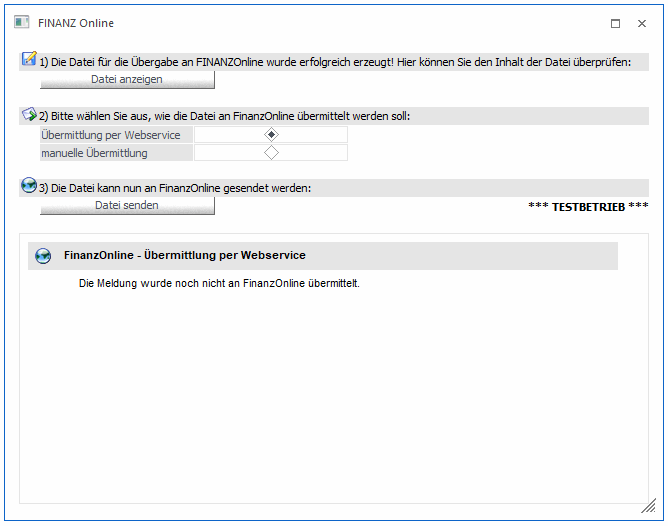
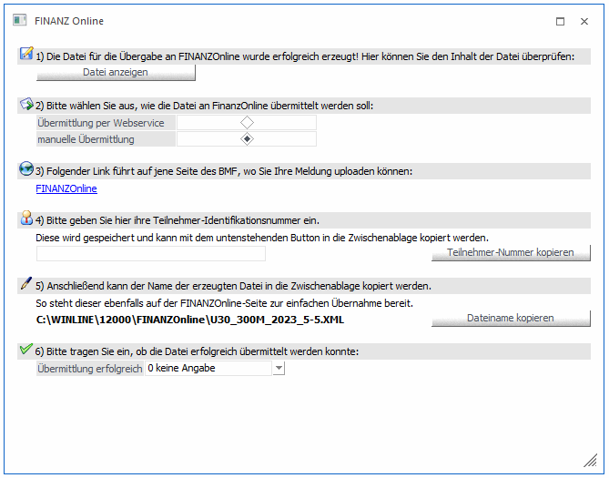

Dieses Fenster wird geöffnet, wenn bei der USt-Voranmeldungs-Ausgabe, oder bei der Ausgabe der Zusammenfassenden Meldung (nur für Österreich!) die Option "Datei für FINANZOnline erzeugen" oder bei der Ausgabe der KommSt.-Erklärung im WinLine LOHN - Österreich die Option "Ausgabe auf FINOnline" aktiviert wurde. Weiters wird dieses Fenster geöffnet, wenn eine XML-Datei im Menüpunkt "Selbstbemessungsabgaben" erzeugt wird.
Das Fenster soll Ihnen bei der Übermittlung der Umsatzsteuervoranmeldung, der Zusammenfassenden Meldung, der Kommunalsteuererklärung sowie der Selbstbemessungsabgaben in elektronischer Form helfen, da dieser Vorgang wegen den Sicherheitsbestimmungen derzeit leider nicht automatisiert werden kann.
Die Übermittlung der Daten ist grundsätzlich in 6 Teile aufgeteilt.
Übermittlung per Webservice

1.) Über den Button "Datei anzeigen" wird der "UVA - XML-Viewer", bei ZM-Dateien der "ZM - XML-Viewer", und bei SB-Dateien der "SB - XML-Viewer" geöffnet. In diesen Viewern wird die XML-Datei in einer "lesbaren" Form dargestellt.
2.) Auswahl, wie die Datei an FinanzOnline übermittelt werden soll:
Übermittlung per Webservice
Hierfür muss im Mandantenstamm Register FinanzOnline der WebService-Benutzer korrekt hinterlegt sein.
3.) Über den Button "Datei senden" kann die Datei an FinanzOnline übermittelt werden.
Manuelle Übermittlung der Datei an FinanzOnline

1.) Über den Button "Datei anzeigen" wird der "UVA - XML-Viewer", bei ZM-Dateien der "ZM - XML-Viewer", und bei SB-Dateien der "SB - XML-Viewer" geöffnet. In diesen Viewern wird die XML-Datei in einer "lesbaren" Form dargestellt.
2.) Auswahl, wie die Datei an FinanzOnline übermittelt werden soll:
manuelle Übermittlung
3.) Anwahl der entsprechenden Internet-Seite
Durch Anklicken des Links "FINANZOnline" wird die Seite https://finanzonline.bmf.gv.at/, die den Einstiegspunkt für die elektronische Übermittlung darstellt, aufgerufen. Voraussetzung für den Aufruf der Seite ist, dass ein Internetzugang eingerichtet ist.
4.) In diesem Feld kann die Teilnehmer-Identifikationsnummer für die Anmeldung an FINANZOnline eingetragen werden. Das ist die Nummer, die nach der Erstanmeldung vom Finanzamt festgelegt wurde und die auch nicht verändert werden kann. Wird hier eine Nummer eingetragen und das Feld bestätigt, wird diese Nummer gespeichert und steht beim nächsten Aufruf dieses Mandanten, des Wirtschaftsjahres und des gleichen Users wieder zur Verfügung.
Durch Anklicken des Buttons "Teilnehmer-Nummer kopieren" wird die max. 12stellige Nummer in den Zwischenspeicher gestellt und kann auf der FINANZOnline Seite über den Menüpunkt Bearbeiten/Einfügen in das entsprechende Feld gefüllt werden.
5.) Hier wird die Datei angezeigt, die durch die Ausgabe der UVA/ZM/SB/KommSt.-Erklärung auf Datei erzeugt wurde. Durch Anklicken des Buttons "Dateiname kopieren" werden diese Informationen in den Zwischenspeicher kopiert. Auf der Seite der FINANZOnline kann diese Information dann durch Anwahl des Menüpunktes Bearbeiten/Einfügen in das entsprechende Feld übernommen werden.
6.) Hier kann ausgewählt werden, ob die Datei erfolgreich übermittelt werden konnte. Zur Auswahl stehen
ü Keine Angabe
ü Erfolgreich an FinanzOnline übermittelt
ü Fehler bei der Übermittlung
Wenn die Daten an die FINANZOnline erfolgreich übermittelt wurden, dann kann dieses Fenster durch Drücken der ESC-Taste verlassen werden. Die vorgenommenen Einstellungen werden pro Mandant, Wirtschaftsjahr und User gespeichert.